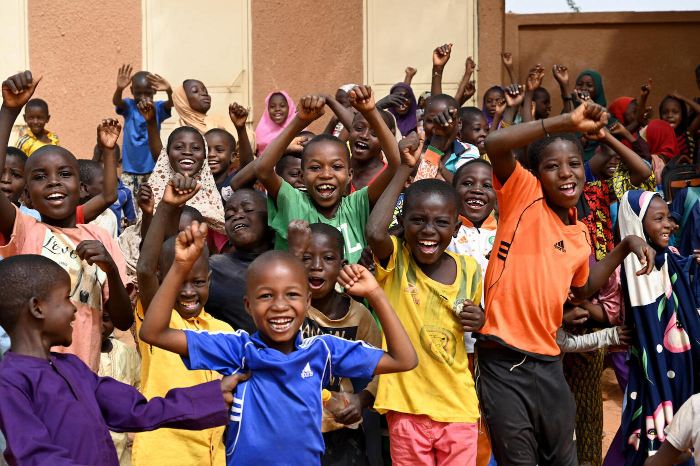

Smart Library isn't pitching the whole world yet. We're deliberately starting with the people best positioned to help us prove this works.

Right now, Smart Library is a proof-of-concept — not yet a proven model. That means our target market isn't a large international donor or a national ministry; it's local, Niger-based investors and NGOs who already work in the Maradi, Zinder, and Dosso regions, understand the on-the-ground reality, and are willing to take an early bet on an unproven but low-cost pilot.
These are the partners who can move quickly, fund a single library shed at a time, and help us learn fast — without needing years of due diligence that a large institution would require first.
We're raising funding for our first library sheds in Maradi, Zinder, and Dosso from partners already working in Niger.
We track attendance, reading-level gains, and device/library reliability to build a real evidence base.
Once we prove our libraries work and kids have been seen to grow with them, we will take that evidence to larger organizations.
With that new investor capital, we will be able to spread across the country and hopefully across the world.
Help us fund and prove the first Smart Library pilot sites — and be part of the evidence that unlocks everything that comes after.
Get Involved